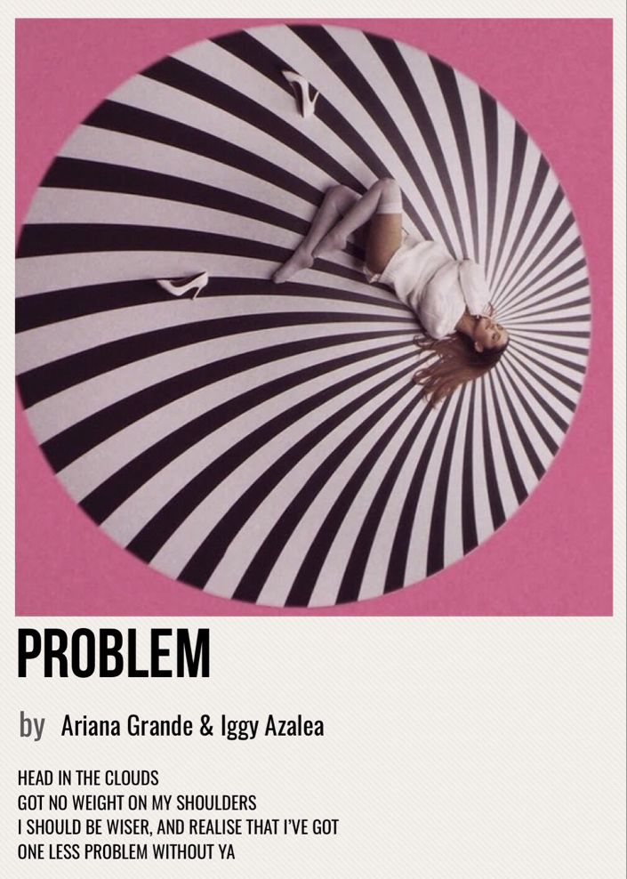

Información
Nombre:My everything
Año de lanzamiento:25 de agosto de 2014
Discográfica:Republic Records
Género: Pop, R&B, EDM, dance-pop
Duración total: Aproximadamente 40 minutos (edición estándar)
Grabación:Entre octubre de 2013 y mayo de 2014, en estudios de Los Ángeles, Nueva York y Londres
Productores destacados:Max Martin, Shellback, Ryan Tedder, Benny Blanco, Tommy Brown, Zedd, Ilya Salmanzadeh, David Guetta, entre otros
Rendimiento comercial y certificaciones:Debutó en el número 1 del Billboard 200 con más de 169,000 copias vendidas en su primera semana en Estados Unidos. Ha sido certificado Platino por la RIAA y ha vendido más de 3 millones de copias en todo el mundo. El álbum produjo múltiples sencillos exitosos como “Problem”, “Break Free”, “Love Me Harder” y “One Last Time”
CANCIONES
- Intro — 1:20
- Problem (feat. Iggy Azalea) — 3:14
- One Last Time — 3:17
- Why Try — 3:31
- Break Free (feat. Zedd) — 3:34
- Best Mistake (feat. Big Sean) — 3:53
- Be My Baby (feat. Cashmere Cat) — 3:37
- Break Your Heart Right Back (feat. Childish Gambino) — 4:13
- Love Me Harder (with The Weeknd) — 3:56
- Just a Little Bit of Your Heart — 3:52
- Hands on Me (feat. A$AP Ferg) — 3:12
- My Everything — 2:48
Reproducir la canción con Html
Ejemplo de reproducción de la canción "Problem (feat. Iggy Azalea)":
